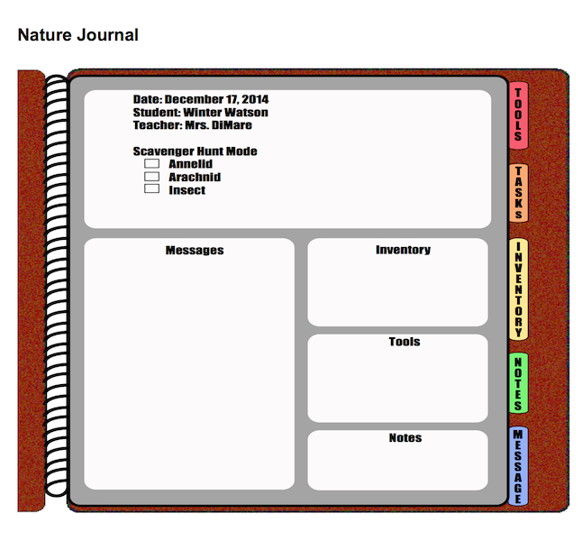
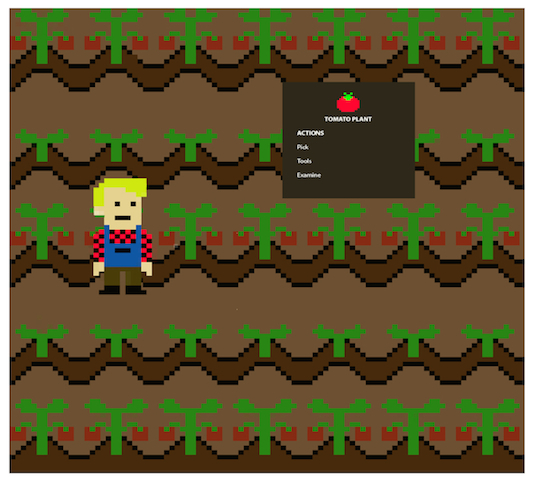

An interactive environment for students ages 7–10 to learn life science in accordance with national science standards, while engaging in an authentic process of scientific inquiry.
Cooperative project: literature review, simulator mechanics design, instructional design, simulator testing.
Prototype. I conducted user research, developed end-to-end UI/UX for the simulator, and designed mockups based on user feedback.

